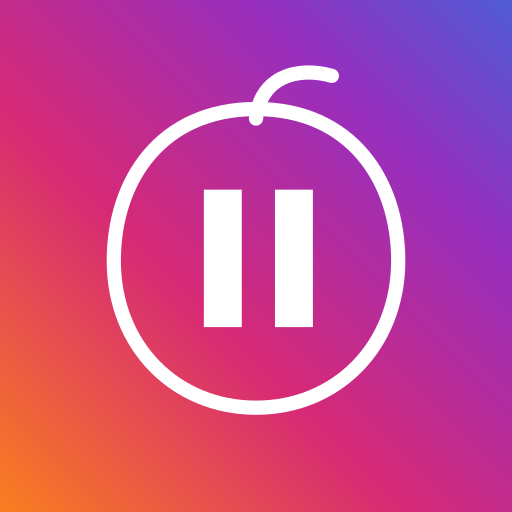
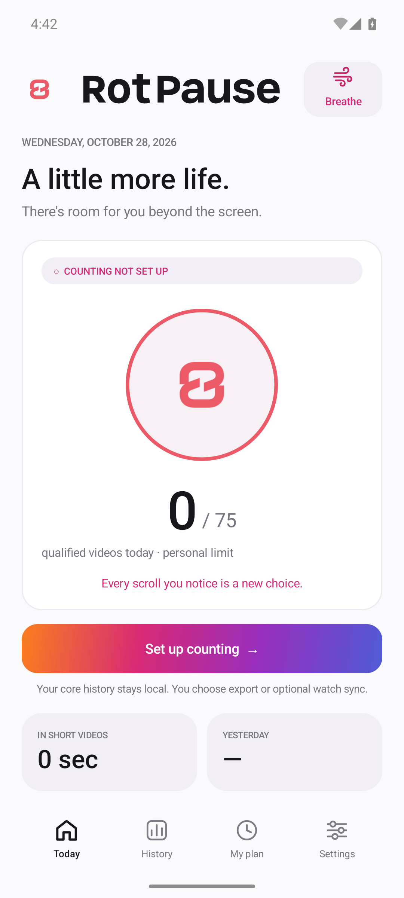

See your rhythm.
Videos qualify after 0.75 seconds of stable detected visibility. Detected quick skips appear separately and never use your daily limit. Counts are estimates, not platform view statistics.

A little more life.
Notice how many short videos pass by. Set your own rhythm, take a breath, and leave a little room for life beyond the screen.
Android · Release previewPlanned price: US$1, paid once. No ads, subscriptions or in-app purchases. RotPause has not launched on Google Play yet; final local prices will appear in the store.

Small signals. Your choices.
Videos qualify after 0.75 seconds of stable detected visibility. Detected quick skips appear separately and never use your daily limit. Counts are estimates, not platform view statistics.
Set a personal daily limit. Use an optional live counter or dismissible prompts. An optional 1:22 breathing timer includes safety information and a Stop control.
History stays local by default. Optional Wear OS sync shares only a daily summary with your paired watch through Google Play services, which may use encrypted cloud relay.
Counting needs your separate consent and Android Accessibility Service permission. You can explore the app first, pause it at any time and leave every prompt. There are no streaks, penalties or scores about your brain.
The candidate supports English, Spanish, French, Simplified Chinese and Arabic, including right-to-left layout. Translation and device checks are in progress; independent native-language review is not yet complete.
The Wear OS companion includes a daily counter, a Tile and a watch-face complication. It requires a paired Android phone and a matching signed RotPause installation. Real paired-device transport validation is pending. The phone breathing timer is not a watch feature.
The current candidate includes adapters for Instagram Reels, YouTube Shorts, Facebook Reels and Snapchat Spotlight. Compatibility with current real app versions is still being validated. TikTok and fullscreen X video detection are experimental and switched off by default. X text timelines are not intended to count.
Counts are estimates based on detectable screens and transitions, rather than official platform view statistics. Third-party layout changes can affect results. Android 8 or later is required; not every Android version or device has been tested.
With your separate, optional consent and Android permission, RotPause detects supported short-video screens and scroll events. It temporarily processes interface identifiers and selected navigation labels. It does not record messages, passwords, videos, audio or screenshots. You can explore the app without enabling the service.
Yes. Pause counting, change tracked apps, withdraw consent or disable the Android service. Settings lets you export history, settings and consent metadata, or delete counting history. Uninstalling removes that installation’s local app data. Optional watch sync has a separate off-and-clear control; a disconnected watch may retain its latest summary until it reconnects or you clear its app data. Copies you export are managed separately by you.
History older than 90 calendar days is removed when RotPause next runs or records activity. It is not deleted by a background timer while the app is dormant. Settings and the latest consent choice remain until app data is cleared or the app is uninstalled.
The optional breathing timer provides no medical advice, diagnosis or treatment. Read the safety information before using it. “Brain rot” is a playful description of scrolling habits, not a medical score or a claim about brain damage.
Not yet. This page describes a release preview. There is no live Google Play listing or purchase link. The planned purchase is a one-time US$1 base price, subject to the store's local pricing and taxes.